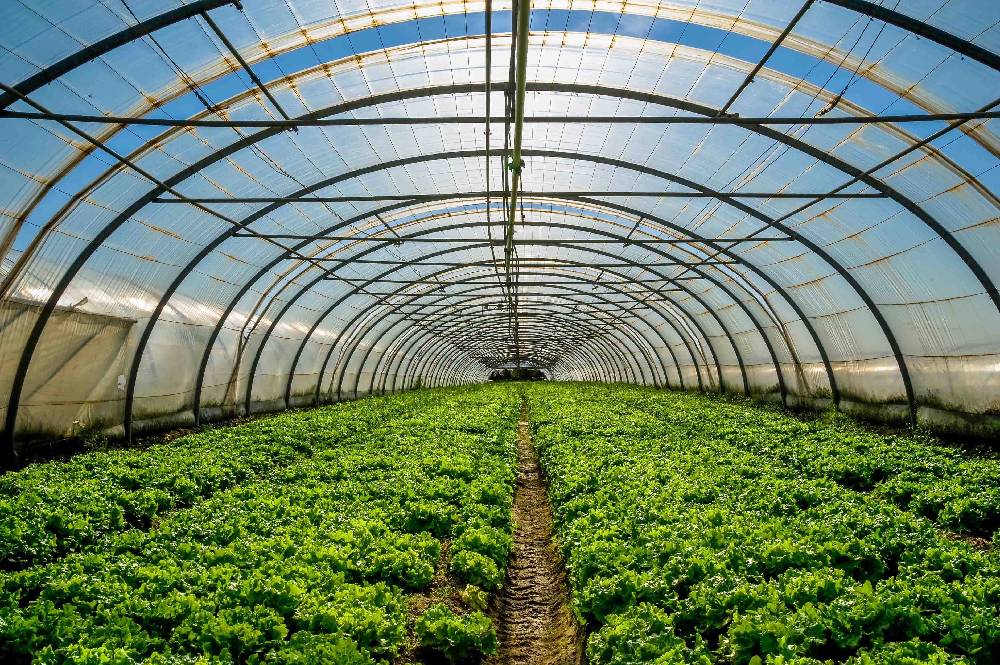
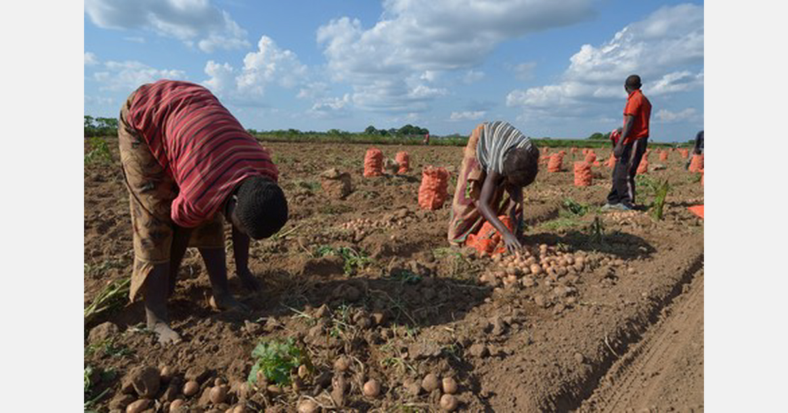

Our Projects
At Lilitha's Nature Relief, we use modern technology and agricultural knowledge to help farmers improve their farming practices. Below are some of the projects we work on.
1. Smart Irrigation Project

This project helps farmers use water more efficiently. We assess the farm and create an irrigation plan based on the crops, soil type and water requirements.
Goal: Reduce water waste while keeping crops healthy.
2. Drone Crop Monitoring Project

Lilitha's Nature Relief uses drones to inspect large farming areas. Drone images can help identify areas where crops may be unhealthy, damaged or affected by pests and diseases.
Goal: Help farmers identify crop problems early.
3. Soil Testing Project

We help farmers understand the condition of their soil. Soil testing provides information that can help farmers make better decisions about nutrients, fertiliser and crop selection.
Goal: Improve soil health and crop production.
4. Greenhouse Management Project

Our greenhouse project focuses on helping farmers manage controlled growing environments. We provide guidance on temperature, watering, ventilation and crop care.
Goal: Create better growing conditions for crops throughout the year.
5. Crop Health Monitoring Project

We monitor crops to help farmers notice changes in crop health. Regular monitoring can help identify possible pest problems, diseases and poor plant growth.
Goal: Improve crop health and reduce production losses.
6. Small-Scale Farmer Support Project

Lilitha's Nature Relief also supports small-scale farmers by providing agricultural advice and practical farming solutions. We help farmers understand how technology can be used to improve productivity.
Goal: Make smart farming technology more accessible to small and developing farms.
Our Project Approach
- Understand the farmer's needs.
- Assess the farm and crops.
- Identify possible problems.
- Recommend a suitable technology solution.
- Implement the solution.
- Monitor the results.
Interested in Working With Us?
If you need help improving your farming operation, Lilitha's Nature Relief can help you find a suitable smart farming solution.